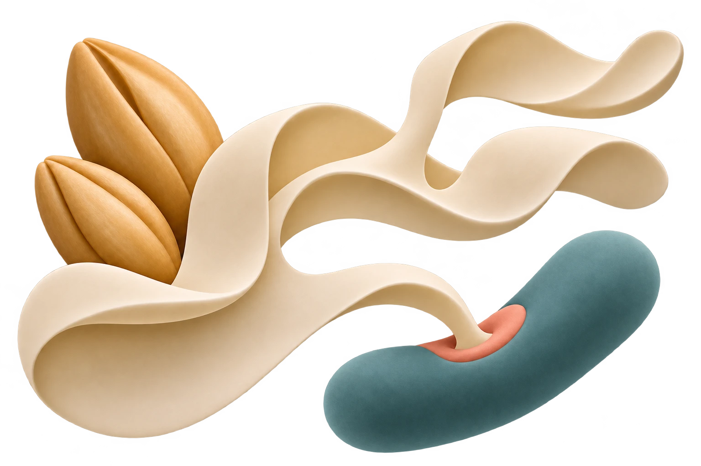
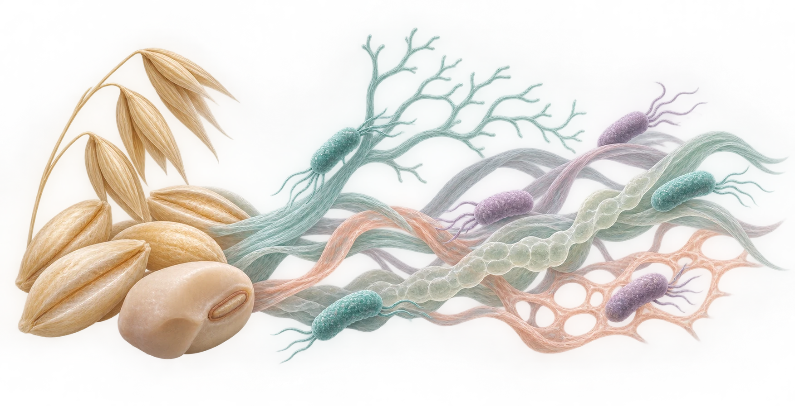
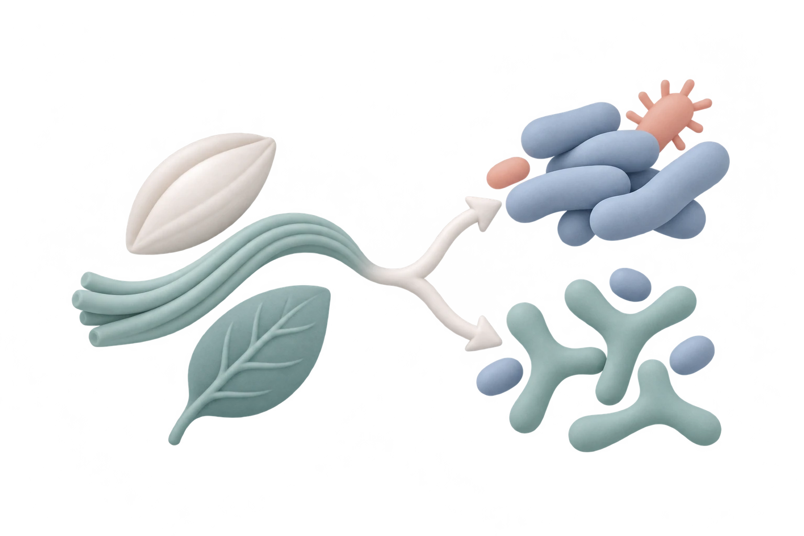

Microbiome Therapeutics
미생물 치료제 개발
한국인의 장내미생물 기능군을 유형화하고, 개인마다 필요한 식이섬유와 조합을 선택해 목표한 대사반응을 만드는 정밀영양 치료제를 개발합니다.

Functional Guilds
한국인 장내미생물의 보유 기능군 유형화
Ongoing study
장내미생물의 대사활동을 조절하려면 개인이 어떤 기능을 가진 미생물을 보유하고 있는지부터 알아야 합니다. 식이섬유를 분해하거나 특정 대사산물을 만드는 등 같은 기능을 담당하는 미생물 집단을 기능군(functional guild)이라고 합니다. 우리는 대규모 한국인 코호트에서 이러한 기능군을 유형화하고, 개인에게 필요한 식이섬유와 조합을 선택하는 연구를 수행 중입니다.
식이섬유가 목표 대사산물로 바뀌기까지는 기질을 처음 분해하는 기능, 중간 대사산물을 이용하는 기능, 최종 산물을 생성하거나 소비하는 기능이 이어져야 합니다. 같은 기능유전자를 비슷한 양으로 가지고 있어도 그 기능을 담당하는 균의 구성과 미생물 간 연결은 다를 수 있습니다. 따라서 기능의 양과 담당균의 구성, 대사 연결을 함께 분석하고 있습니다.
선행 통합분석에서는 기능량이 비슷해도 담당균의 구성이 다르고, 다당 이용 기능이 낮은 군집에서도 일부 소당 이용 기능은 보존되는 양상을 확인했습니다. 긴 다당의 분해가 부족한 군집과 그 이후의 대사 기능이 부족한 군집에는 서로 다른 기질이나 조합이 필요할 것으로 예상했습니다. 이 차이를 실제 식이섬유 반응과 연결하는 것이 현재 연구의 핵심입니다.

Dietary Intervention & IBS
같은 식사 중재에 대한 반응의 차이
과민성대장증후군(IBS)은 복통과 복부팽만, 배변 양상의 변화가 반복되며, 식사에 따른 증상 변화도 사람마다 다릅니다. 우리는 식사 중재에 대한 반응의 차이가 장내미생물과 연관될 것으로 예상하고, 채식 위주의 식단을 제공하는 4일간의 사찰식 프로그램에서 미생물과 증상의 변화를 조사하였습니다.
분석 결과, 장내미생물의 구성 변화가 큰 환자군에서 IBS 증상의 개선도 더 크게 나타났습니다. 이들에서는 Faecalibacterium 같은 공생균이 증가하고 Klebsiella와 Enterococcus 등의 기회감염성 균군은 감소하는 경향이 있었습니다. 미생물 반응이 큰 군과 작은 군은 중재 전의 미생물 구성에서도 차이가 나타났습니다.
이 연구는 식사 중재를 포함한 프로그램의 임상 반응이 개인의 장내미생물 특성 및 변화와 연관된다는 사실을 보여줍니다. 이러한 반응의 차이를 바탕으로, 개입 전 미생물 정보를 이용해 환자에게 적합한 식사를 선택하는 연구를 수행하고 있습니다.

Personalized Nutrition
기능군에 맞는 식이섬유와 조합의 선택
Future plan
기능군을 유형화한 뒤에는 그 정보로 선택한 식이섬유가 실제로 더 나은 반응을 만드는지를 검증해야 합니다. 우리는 개인의 기질 분해 능력과 대사산물 생성 기능, 질환에서 조절해야 할 기능을 기준으로 식이섬유와 조합을 설계하고 있습니다.
같은 사람의 검체에 여러 식이섬유를 적용해 발효 반응과 생성 대사산물을 비교하고, 그 차이가 개입 전 기능구성과 어떻게 연결되는지 확인할 계획입니다. 단일 기질로 부족한 대사단계를 보완할 조합을 선별한 뒤, 그 발효산물이 장상피의 장벽 기능과 면역세포 반응을 어떻게 바꾸는지 검증할 예정입니다.
이후 새로운 대상자에서 기능군에 맞춰 고른 조합과 후보 중 가장 효과적인 공통 조합을 비교할 계획입니다. 개인의 미생물 정보를 이용한 선택이 실제로 더 나은 반응을 만드는지를 확인한 뒤, 인체에서 효과와 지속성을 평가해 정밀영양 치료제로 개발하고자 합니다.